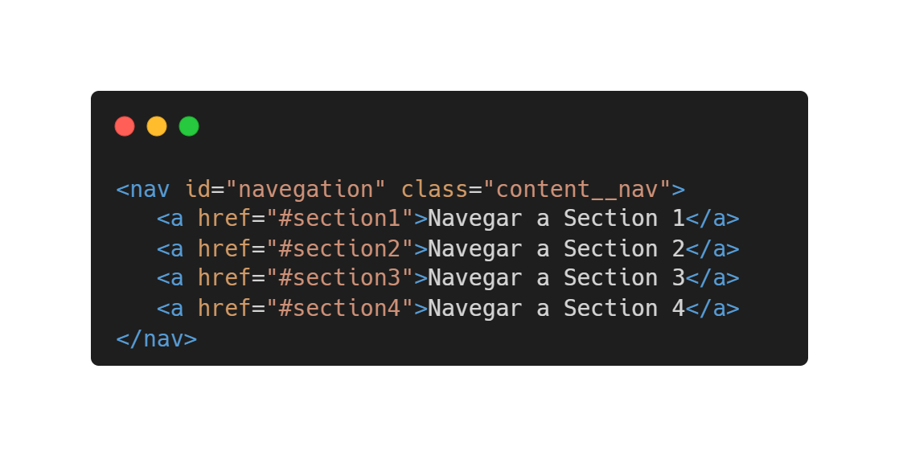

Marcadores ID y Enlaces
Los marcadores HTML se utilizan para permitir a los lectores saltar a partes específicas de una página web.
Los marcadores pueden ser útiles si tu página es muy larga.
Para utilizar un marcador, primero debes crearlo y luego agregarle un enlace.
Luego, cuando se hace clic en el enlace, la página se desplazará hasta la ubicación con el marcador.
Implementación de código

